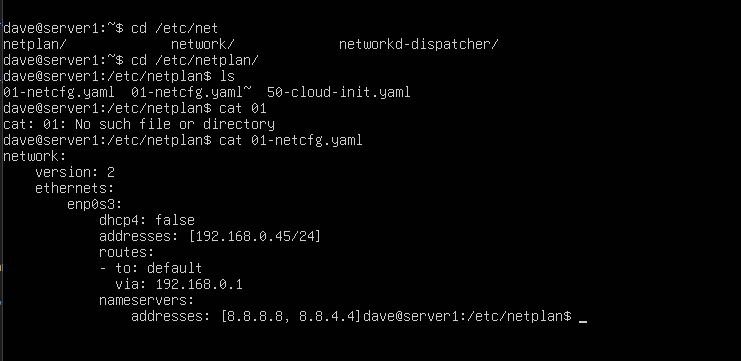

1. El Modelo de Red L2: ¿Qué es el Adaptador Puente?
En el modo NAT (predeterminado de VirtualBox), la máquina virtual queda oculta detrás del hipervisor: puede salir a Internet, pero ningún otro equipo de tu red local puede comunicarse con ella. Para levantar un cluster de Big Data, bases de datos o servicios accesibles por tus compañeros, necesitamos el Adaptador Puente (Bridged Adapter).
En modo puente, el hipervisor intercepta los paquetes de la tarjeta de red física del anfitrión y los conmuta con la tarjeta virtual de la VM a nivel de Capa 2 (Enlace de Datos). La máquina virtual obtiene su propia dirección MAC y solicita o fija una IP en la misma subred física que tu router.
✦ Ventajas del Modo Puente
- Visibilidad bidireccional: La VM puede recibir peticiones SSH, HTTP o Kafka desde cualquier equipo de la red del aula o de casa.
- Sin reenvío de puertos: No necesitas configurar mapeos de puertos individuales en VirtualBox.
- Rendimiento nativo: El tráfico L2 fluye directamente por el conmutador sin sobrecarga de NAT.
✦ Precauciones Críticas
- Exposición a la red: La máquina es accesible por cualquiera en la LAN; requiere contraseñas seguras y firewall configurado.
- Colisión de IPs: Si asignas una IP que ya tiene otro equipo o que el router entrega por DHCP, ambos perderán red.
2. Paso 1: Configurar el Adaptador de Red en VirtualBox
Antes de arrancar la máquina virtual o con ella completamente apagada:
Abrir la Configuración de la Máquina
En el panel principal de VirtualBox, selecciona tu máquina virtual de Ubuntu Server y haz clic en Configuración (icono de engranaje) o presiona Ctrl + S (Cmd + S en macOS).
Asignar el Adaptador en Puente
Entra en la pestaña Red y selecciona el Adaptador 1:
- Asegúrate de que la casilla Habilitar adaptador de red esté marcada.
- En el desplegable Conectado a, selecciona Adaptador puente (Bridged Adapter).
- En Nombre, selecciona la tarjeta de red física por la que tu ordenador anfitrión se conecta a Internet (tu adaptador Ethernet cableado o tu tarjeta Wi-Fi).
Comprobar el Estado del Cable y Opciones Avanzadas
Despliega la sección Avanzadas y verifica que la opción Cable conectado esté activada. Si esta casilla está desmarcada, el Kernel de Linux detectará el enlace como NO-CARRIER (cable desconectado) y Netplan nunca levantará la interfaz.

🔍 Captura de referencia: Selección de Adaptador Puente y cable conectado en VirtualBox (clic para ampliar)
3. Paso 2: La Regla de Oro de la Subred (¡Inspección Previa!)
192.168.0.45 cuando tu router doméstico o el del instituto trabaja en 192.168.1.0/24 o 10.x.x.x causará un blackout total: la máquina no podrá resolver nombres, no alcanzará la puerta de enlace y perderá el acceso a repositorios y paquetes.
Antes de configurar Netplan en la máquina virtual, debes consultar la red de tu sistema anfitrión (tu ordenador real) para conocer tres datos vitales: la subred, la máscara de red y la puerta de enlace (Gateway).
En Windows (PowerShell / CMD):
ipconfigBusca tu adaptador activo. Anota la Puerta de enlace predeterminada (ej: 192.168.1.1) y la Máscara (ej: 255.255.255.0 = /24).
En Linux o macOS (Terminal):
# Linux
ip route show default
# macOS
route -n get default | grep gatewayAnota la IP de salida tras default via (ej: 192.168.1.1).
192.168.1.1, los primeros tres octetos de tu VM deben ser idénticos: 192.168.1.xxx. Elige un último octeto alto que esté fuera del rango habitual de DHCP de los routers (por ejemplo, .200 o .220) para garantizar que ningún móvil u ordenador del aula lo tome por sorpresa.
4. Paso 3: Identificar el Nombre de la Interfaz en Ubuntu Server
Inicia sesión en tu máquina virtual de Ubuntu Server (a través de la ventana de VirtualBox). En Linux moderno, los nombres de interfaz ya no son siempre eth0, sino nombres predecibles basados en el bus PCI (como enp0s3 o ens33).
# Consulta compacta y legible de interfaces y enlaces
ip -br link
# O de forma detallada
ip addrLocaliza la interfaz de tipo Ethernet (que suele empezar por en... o eth..., ignorando la de loopback lo). En VirtualBox sobre chipsets Intel estándar suele llamarse enp0s3. Anota este identificador exacto.
5. Paso 4: Anatomía de Netplan & Edición del Archivo YAML
Ubuntu Server utiliza Netplan como motor declarativo de configuración de red. Netplan lee archivos estructurados en formato YAML dentro del directorio /etc/netplan/.
Paso 4.1: Copia de Seguridad Preventiva
Un error tipográfico o de indentación en YAML puede dejar al servidor sin red. Siempre hacemos un duplicado de seguridad antes de alterar la configuración:
# 1. Comprueba qué archivo existe actualmente
ls -la /etc/netplan/
# 2. Crea un respaldo del instalador original (ej. 00-installer-config.yaml o 50-cloud-init.yaml)
sudo cp /etc/netplan/00-installer-config.yaml /etc/netplan/00-installer-config.yaml.bak.yaml en orden alfabético. Si dejas un archivo configurando enp0s3 con dhcp4: true y creas otro archivo con IP estática, se producirá un conflicto. Lo recomendable es editar directamente el archivo principal o renombrar el original con extensión .bak.
Paso 4.2: Edición del Archivo de Configuración
Abre el archivo de configuración con el editor nano:
sudo nano /etc/netplan/00-installer-config.yamlEscribe o sustituye el contenido con el siguiente bloque adaptado a tu red. (Sustituye la subred de ejemplo 192.168.1.x por la que hayas verificado en el Paso 2):
network:
version: 2
renderer: networkd
ethernets:
enp0s3:
dhcp4: no
addresses:
- 192.168.1.200/24
routes:
- to: default
via: 192.168.1.1
nameservers:
addresses:
- 1.1.1.1
- 8.8.8.8
✦ Claves del archivo YAML
dhcp4: no: Apaga la asignación automática por DHCP para tomar el control estático.addresses: Lista con la IP estática deseada seguida de la máscara CIDR (/24equivale a255.255.255.0).routes: Reemplaza a la directiva deprecadagateway4. Define que todo el tráfico de salida (default) pase por el routervia: 192.168.1.1.nameservers: Servidores DNS públicos (Cloudflare1.1.1.1y Google8.8.8.8) para resolver dominios de Internet.
✦ Normas estrictas de YAML
- PROHIBIDO TABULADORES: YAML falla estrepitosamente si insertas un tabulador (
\t). Usa siempre 2 espacios por cada nivel de sangría. - Espacios tras los dos puntos: Escribe siempre
version: 2(con un espacio tras los:). Escribirversion:2rompe el parser.
Paso 4.3: Permisos Estrictos de Seguridad
Netplan requiere que los ficheros de configuración solo sean legibles por el usuario root. Si los permisos son demasiado abiertos, Netplan lanzará un aviso de seguridad en cada ejecución:
sudo chmod 600 /etc/netplan/*.yaml6. Paso 5: Aplicar la Configuración de Forma Segura
En administración de sistemas en producción, jamás se ejecuta netplan apply a ciegas cuando estás conectado remotamente, ya que un fallo en la IP te dejaría expulsado del servidor. En su lugar, utilizamos el comando de prueba:
sudo netplan tryEl comando netplan try verifica la sintaxis YAML y aplica los cambios iniciando una cuenta atrás de 120 segundos. Si la red responde y estás conforme, presionas ENTER para confirmar. Si ocurre un problema y no confirmas, el sistema revierte automáticamente al estado anterior sin dejarte bloqueado.
Si estás trabajando directamente desde la ventana física de la máquina virtual en VirtualBox, también puedes aplicar los cambios directamente con:
sudo netplan apply7. Paso 6: Protocolo de Verificación en 4 Capas
Para certificar que la máquina virtual tiene conectividad completa, seguimos una rutina metódica de diagnóstico de menor a mayor capa del modelo OSI:
Capa 2/3: Verificar Asignación de IP Local
Comprueba que la interfaz tiene la IP estática y el estado esté en UP:
ip -br a show enp0s3Debe responder: enp0s3 UP 192.168.1.200/24 ...
Capa 3: Verificar la Tabla de Enrutamiento
Asegúrate de que la puerta de enlace por defecto apunta al router:
ip route showDebe incluir una línea: default via 192.168.1.1 dev enp0s3 proto static
Capa 3: Ping a la Puerta de Enlace (Router) y a Internet
Comprueba primero el salto local hacia el router y luego la salida exterior por IP numérica:
# Salto local al router
ping -c 3 192.168.1.1
# Salida directa a Internet (sin DNS)
ping -c 3 1.1.1.1Capa 7: Resolución de Nombres de Dominio (DNS)
Finalmente, comprueba que los servidores DNS resuelven nombres con éxito:
ping -c 3 google.com8. Guía Rápida de Resolución de Problemas (Troubleshooting)
| Síntoma / Error | Causa Probable | Solución Recomendada |
|---|---|---|
Invalid YAML at line X: found character that cannot start any token |
Uso accidental de tabuladores (\t) en lugar de espacios. |
Revisa el archivo en nano con la opción nano -ET2 o sustituye los tabuladores por exactamente 2 espacios por nivel. |
Destination Host Unreachable al hacer ping al router |
Subred incorrecta o la interfaz física elegida en VirtualBox no tiene conexión activa. | Verifica con ip route default en el anfitrión que estás en la misma subred y que seleccionaste la tarjeta física conectada (cable o Wi-Fi). |
ping 1.1.1.1 funciona pero ping google.com falla con Temporary failure in name resolution |
Los servidores DNS no están respondiendo o no se declararon correctamente en el YAML. | Verifica el bloque nameservers: addresses: [1.1.1.1, 8.8.8.8] y ejecuta systemd-resolve --status o resolvectl status. |
Permissions for /etc/netplan/... are too open |
El archivo tiene permisos superiores a lectura/escritura exclusiva de root. | Ejecuta sudo chmod 600 /etc/netplan/*.yaml. |
| En portátil con Wi-Fi, la VM no responde a ningún ping | El router Wi-Fi no soporta tramas de 4 direcciones o rechaza la MAC virtual. | Conecta el equipo mediante cable Ethernet o cambia la configuración de red temporalmente a NAT / Solo-Anfitrión. |
✓ Lista de Comprobación del Administrador
Marca cada hito conforme lo vayas completando en tu laboratorio para verificar el éxito del despliegue:
- Adaptador 1 configurado en Modo puente con la tarjeta física correcta y Cable conectado activo.
- Subred y Gateway del anfitrión identificados antes de redactar la configuración.
-
Copia de seguridad realizada (
00-installer-config.yaml.bak). -
YAML redactado con 2 espacios por nivel (sin tabuladores) y permisos restringidos a
chmod 600. -
sudo netplan try/applyejecutado con éxito sin errores de sintaxis. -
Prueba de salida WAN (
ping -c 3 1.1.1.1) y resolución DNS (ping -c 3 google.com) superadas al 100%.